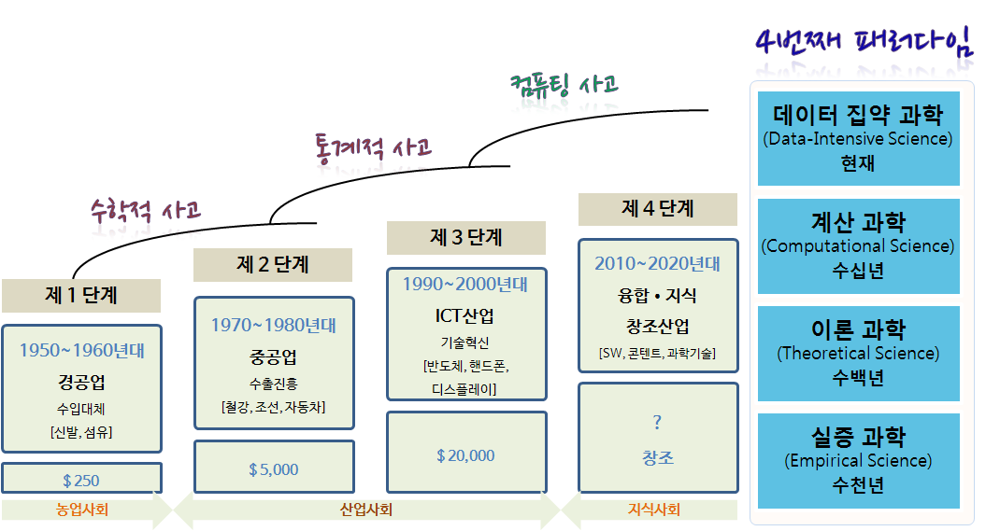
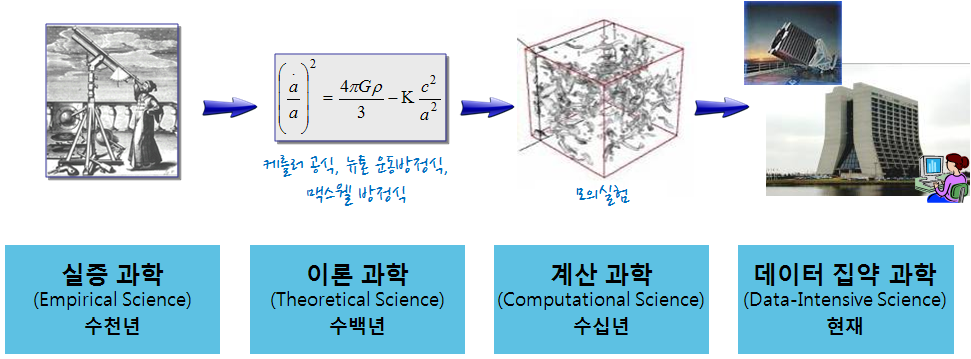

구성 초등학교 소프트웨어 교육
컴퓨터 과학 언플러그드(Computer Science Unplugged) - 맵리듀스
학습 목표
- 병렬 컴퓨팅을 이해한다.
1. 대한민국과 4번째 패러다임

2. 마이크로소프트 4번째 패러다임

3. 대한민국과 과학

빅데이터란?
“Big Data is any data that is expensive to manage and hard to extract value from” -Michael Franklin, UC Berkeley